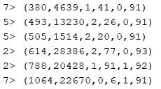

Highway patrol
Introduction
For this Project I used the modified data based on a real dataset used by the Police Department for highway patrol. This dataset is composed of X observations and 8 different variables. In this project we consider that each vehicle reports a position event every 30 seconds with the following format:
Time, VID, Spd, XWay, Lane, Dir, Seg, Pos. The goal of this project is to develop a Java program using Flink implementing the following functionality:
- Speed Radar: detect cars that overcome the speed limit of 90 mph. Format of the output:
Time, VID, XWay, Seg, Dir, Spd
- Average Speed Control: detects cars with an average speed higher than 60 mph between segments 52 and 56 (both included) in both directions. Format of the output:
Time1, Time2, VID, XWay, Dir, AvgSpd, where Time1 is the time of the first event of the segment and Time2 is the time of the last event of the segment.
- Accident Reporter: detects stopped vehicles on any segment. A vehicle is stopped when it reports at least 4 consecutive events from the same position. Format of the output:
Time1, Time2, VID, XWay, Seg, Dir, Pos, where Time1 is the time of the first event the car stops and Time2 is the time of the fourth event the car reports to be stopped.
The output will be then 3 .csv files.
The App was developed using
Oracle Java 8, Flink 1.3.2 and deployed using
Ubuntu.
The Flink program is configured with the
flink-quickstart-java maven artifact.
package master2017.flink;
import org.apache.flink.api.common.functions.FilterFunction;
import org.apache.flink.api.common.functions.MapFunction;
import org.apache.flink.api.java.tuple.Tuple;
import org.apache.flink.api.java.tuple.Tuple8;
import org.apache.flink.api.java.tuple.Tuple6;
import org.apache.flink.core.fs.FileSystem;
import org.apache.flink.streaming.api.TimeCharacteristic;
import org.apache.flink.streaming.api.datastream.DataStream;
import org.apache.flink.streaming.api.datastream.SingleOutputStreamOperator;
import org.apache.flink.streaming.api.environment.StreamExecutionEnvironment;
import org.apache.flink.streaming.api.functions.timestamps.AscendingTimestampExtractor;
import org.apache.flink.streaming.api.functions.windowing.WindowFunction;
import org.apache.flink.streaming.api.windowing.assigners.EventTimeSessionWindows;
import org.apache.flink.streaming.api.windowing.time.Time;
import org.apache.flink.streaming.api.windowing.windows.GlobalWindow;
import org.apache.flink.streaming.api.windowing.windows.TimeWindow;
import org.apache.flink.util.Collector;
import java.util.*;
public class VehicleTelematics {
public static void main(String[] args) throws Exception {
//Set output paths
String inputFilePath = args[0];
String outputDirectory = args[1];
String outputPathExercise1 = outputDirectory + "/speedfines.csv";
String outputPathExercise2 = outputDirectory + "/avgspeedfines.csv";
String outputPathExercise3 = outputDirectory + "/accidents.csv";
//Set the Stream execution environment
final StreamExecutionEnvironment env = StreamExecutionEnvironment.getExecutionEnvironment();
env.getConfig().disableSysoutLogging();
//Set Time Characteristics as Event Time
env.setStreamTimeCharacteristic(TimeCharacteristic.EventTime);
//Read text file
DataStream<String> source = env.readTextFile(inputFilePath).setParallelism(1);
All the entries in the .csv file are stored into Tuples. In this case, in the object Tuple8 because of the number of variables in the dataset. I stored the instances into two different tuples: the first one is not parallelized, so the order of the instances in this case is not important and the data is not stored according to the data stream. The second one is parallelized: the operation is processed by a single core, so the instances are stored in the correct order of the dataset according to the data stream.
//Get Tuples8 from strings
final DataStream<Tuple8<Integer, Integer, Integer, Integer, Integer, Integer, Integer, Integer>> tuples = source.
map(new MapFunction<String, Tuple8<Integer, Integer, Integer, Integer, Integer, Integer, Integer, Integer>>() {
public Tuple8<Integer, Integer, Integer, Integer, Integer, Integer, Integer, Integer> map(String string) throws Exception {
String[] split_string = string.split(",");
Tuple8<Integer, Integer, Integer, Integer, Integer, Integer, Integer, Integer> tuple = new Tuple8<Integer, Integer, Integer, Integer, Integer, Integer, Integer, Integer>(Integer.parseInt(split_string[0]),
Integer.parseInt(split_string[1]), Integer.parseInt(split_string[2]), Integer.parseInt(split_string[3]), Integer.parseInt(split_string[4]), Integer.parseInt(split_string[5]),
Integer.parseInt(split_string[6]), Integer.parseInt(split_string[7]));
return tuple;
}
});
//Get Tuples8 from strings
final DataStream<Tuple8<Integer, Integer, Integer, Integer, Integer, Integer, Integer, Integer>> tuples_parallelized = source.
map(new MapFunction<String, Tuple8<Integer, Integer, Integer, Integer, Integer, Integer, Integer, Integer>>() {
public Tuple8<Integer, Integer, Integer, Integer, Integer, Integer, Integer, Integer> map(String string) throws Exception {
String[] split_string = string.split(",");
Tuple8<Integer, Integer, Integer, Integer, Integer, Integer, Integer, Integer> tuple = new Tuple8<Integer, Integer, Integer, Integer, Integer, Integer, Integer, Integer>(Integer.parseInt(split_string[0]),
Integer.parseInt(split_string[1]), Integer.parseInt(split_string[2]), Integer.parseInt(split_string[3]), Integer.parseInt(split_string[4]), Integer.parseInt(split_string[5]),
Integer.parseInt(split_string[6]), Integer.parseInt(split_string[7]));
return tuple;
}
}).setParallelism(1);
Speed radar
The goal is to detect all the cars that overcome the speed limit of 90 mph. In order to achieve this result, first filter by the speed overriding the function filter(), and then store the result in a tuple, using the function map(). Finally, the result is written in a .csv file.
Part of the results is printed: the first number represents the if of the core in charge of that specific computation (there are 8 cores in total), and the last value of the tuple represents the speed for that entry. As we can see, all the values are over 90.
SingleOutputStreamOperator exercise1 = tuples.filter(new FilterFunction<Tuple8<Integer, Integer, Integer, Integer, Integer, Integer, Integer, Integer>>() {
@Override
public boolean filter(Tuple8<Integer, Integer, Integer, Integer, Integer, Integer, Integer, Integer> tuple_filter) throws Exception {
int speed = tuple_filter.f2;
if (speed > 90) {
return true;
} else return false;
}
}).map(new MapFunction<Tuple8<Integer, Integer, Integer, Integer, Integer, Integer, Integer, Integer>, Tuple6<Integer, Integer, Integer, Integer, Integer, Integer>>() {
public Tuple6<Integer, Integer, Integer, Integer, Integer, Integer> map(Tuple8<Integer, Integer, Integer, Integer, Integer, Integer, Integer, Integer> tuple8) throws Exception {
Tuple6<Integer, Integer, Integer, Integer, Integer, Integer> tuple6 = new Tuple6<>(tuple8.f0, tuple8.f1, tuple8.f3, tuple8.f6, tuple8.f5, tuple8.f2);
return tuple6;
}
});
exercise1.print();

Average Speed Control
The goal is to detect cars with an average speed higher than 60 mph between segments 52 and 56 (both included) in both directions. It's important to notice that cars that do not complete the segment (52-56) are not taken into account by the average speed control. The number of segment is the 7th variable, so the first step in this task is to filter according to the value of that variable. If this number is included between 52 and 56, I keyed by the variable VID, XWay, Dir and applied a Session Windows with a time gap of 30 seconds. This means that, considering a data stream, a time window closes when no data is transferred for more than 30 seconds. Finally, I filtered by the average speed, which needs to be over 60. In order to do this, I applied a custom Map function called avgFunction(). This function considers all the cars between the segment 52 and 56, and return the first and last timestamp in this interval. Then, the speed is calculated dividing the space between these two segments by the time spent to cover it. All the information are then stored in the collector and written in a csv file.
SingleOutputStreamOperator exercise2 =
tuples.filter(new FilterFunction<Tuple8<Integer, Integer, Integer, Integer, Integer, Integer, Integer, Integer>>() {
@Override
public boolean filter(Tuple8<Integer, Integer, Integer, Integer, Integer, Integer, Integer, Integer> tuple_filter) throws Exception {
int seg = tuple_filter.f6;
if (seg >= 52 && seg <= 56) {
return true;
} else return false;
}
}).assignTimestampsAndWatermarks(new AscendingTimestampExtractor<Tuple8<Integer, Integer, Integer, Integer, Integer, Integer, Integer, Integer>>() {
@Override
public long extractAscendingTimestamp(Tuple8<Integer, Integer, Integer, Integer, Integer, Integer, Integer, Integer> element) {
return element.f0 * 1000;
}
}).keyBy(1,3,5)
.window(EventTimeSessionWindows.withGap(Time.seconds(30)))
.apply(new avgFunction()).filter(new FilterFunction<Tuple6<Integer, Integer, Integer, Integer, Integer, Double>>() {
@Override
public boolean filter(Tuple6<Integer, Integer, Integer, Integer, Integer, Double> tuple_filter) throws Exception {
double speed = tuple_filter.f5;
if (speed > 60) {
return true;
} else return false;
}
});
//Write the result in CSV file
exercise2.writeAsCsv(outputPathExercise2, FileSystem.WriteMode.OVERWRITE).setParallelism(1);
private static class avgFunction implements WindowFunction<Tuple8<Integer, Integer, Integer, Integer, Integer, Integer, Integer, Integer>, Tuple6<Integer, Integer, Integer, Integer, Integer, Double>, Tuple, TimeWindow> {
@Override
public void apply(Tuple tuple, TimeWindow timeWindow, Iterable<Tuple8<Integer, Integer, Integer, Integer, Integer, Integer, Integer, Integer>> iterable, Collector<Tuple6<Integer, Integer, Integer, Integer, Integer, Double>> collector) throws Exception {
boolean seg1 = false, seg2 = false;
Tuple stream;
List<Integer> timestamp = new ArrayList<Integer>();
List<Integer> position = new ArrayList<Integer>();
int max_time = 0, min_time = 0, max_pos =0, min_pos=0;
double average=0;
for (Tuple8 element : iterable) {
if ((int) element.f6 == 52) {
seg1 = true;
timestamp.add((int) element.f0);
position.add((int) element.f7);
} else if ((int) element.f6 == 56) {
seg2 = true;
timestamp.add((int) element.f0);
position.add((int) element.f7);
}
if (seg1 && seg2) {
max_time = Collections.max(timestamp);
min_time = Collections.min(timestamp);
max_pos = Collections.max(position);
min_pos = Collections.min(position);
average = (max_pos - min_pos)*2.23693629/(max_time-min_time);
}
}
collector.collect(new Tuple6<Integer, Integer, Integer, Integer, Integer, Double>(min_time, max_time, tuple.getField(0), tuple.getField(1), tuple.getField(2), average));
}
}
Accident Reporter
The goal is to detect stopped vehicles on any segment. A vehicle is stopped when it reports at least 4 consecutive events from the same position, and an accident report must be sent for each group of 4 events. A car can be stopped for more than 4 consecutive events, thus multiple accident alerts must be generated in that case.
First, I applied a filter to return only the vehicles whose speed is 0. Then, the data stream is keyed by VID, XWay, Dir, Seg, Pos, and a Count Window is applied. The Count Window takes two parameters: the first indicated the number of elements in the window (in our case, 4) and the second integer indicates the slide (in our case, 1).
SingleOutputStreamOperator exercise3 = tuples_parallelized.filter(new FilterFunction<Tuple8<Integer, Integer, Integer, Integer, Integer, Integer, Integer, Integer>>() {
@Override
public boolean filter(Tuple8<Integer, Integer, Integer, Integer, Integer, Integer, Integer, Integer> tuple_filter) throws Exception {
int speed = tuple_filter.f2;
if (speed == 0) {
return true;
} else return false;
}
}).setParallelism(1).keyBy(1, 3, 5, 6, 7).countWindow(4,1)
.apply(new accidentFunction());
//Write the result in CSV file
exercise3.writeAsCsv(outputPathExercise3, FileSystem.WriteMode.OVERWRITE).setParallelism(1);
static class accidentFunction implements WindowFunction<Tuple8<Integer, Integer, Integer, Integer, Integer, Integer, Integer, Integer>, Tuple6<Integer, Integer, Integer, Integer, Integer, Integer>, Tuple, GlobalWindow> {
@Override
public void apply(Tuple tuple, GlobalWindow globalWindow, Iterable<Tuple8<Integer, Integer, Integer, Integer, Integer, Integer, Integer, Integer>> iterable, Collector<Tuple6<Integer, Integer, Integer, Integer, Integer, Integer>> collector) throws Exception {
List<Integer> timestamp = new ArrayList<Integer>();
int max = 0, min = 0;
for (Tuple8 element : iterable) {
timestamp.add((int) element.f0);
}
if (timestamp.size() == 4) {
max = Collections.max(timestamp);
min = Collections.min(timestamp);
collector.collect(new Tuple6<Integer, Integer, Integer, Integer, Integer, Integer>(min, max, tuple.getField(0), tuple.getField(1), tuple.getField(2), tuple.getField(4)));
}
}
}